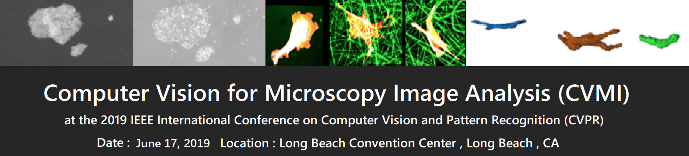

Accepted Papers
| Paper ID | Title |
|---|---|
| 1 | Red Blood Cell Image Generation for Data Augmentation using Conditional Generative Adversarial Networks |
| 4 | Automated Focus Distance Estimation for Digital Microscopy using Deep Convolutional Neural Networks |
| 5 | Online Neural Cell Tracking using Blob-Seed Segmentation and Optical Flow |
| 7 | Cell Image Segmentation by Integrating Pix2pixs for Each Class |
| 10 | Automatic Classification of Whole Slide Pap Smear Images using CNN with PCA based Feature Interpretation |
| 11 | Deep Metric Learning for Identification of Mitotic Patterns of HEp-2 Cell Images |
| 14 | Multi-Object Portion Tracking in 4D Fluorescence Microscopy Imagery with Deep Feature Maps |
| 15 | Enhanced Rotation-Equivariant U-Net for Nuclear Segmentation |
| 17 | Multiscale Kernels for Enhanced U-shaped Network to Improve 3D Neuron Tracing |
| 18 | Cell Image Segmentation using Generative Adversarial Networks, Transfer Learning, and Augmentations |
| 23 | Partially-Independent Framework for Breast Cancer Histopathological Image Classification |
| 24 | Identification of Tuberculosis Bacilli in ZN-Stained Sputum Smear Images: A Deep Learning Approach |